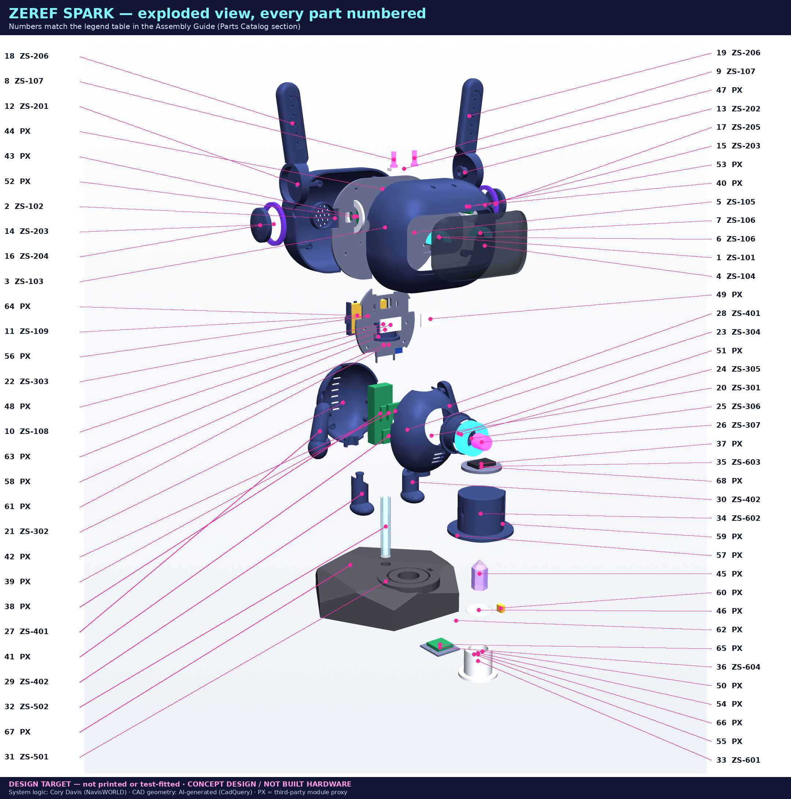

Build-and-learn unit: CAD, 3D printing, embedded sensors, spectroscopy and honest data
DESIGN TARGET — not printed or test-fitted CONCEPT DESIGN / NOT BUILT HARDWARE

System logic and concept: Cory Davis (NavisWORLD). CAD geometry, renders and this guide: AI-generated from that logic. PX parts are third-party modules (Espressif, TDK, Bosch, ROHM, ADI, ams-OSRAM, Adafruit, u-blox …) shown as proxies. Use with the ZEREF SPARK Assembly Guide (same folder). Nothing here has been classroom-tested yet — time estimates are ESTIMATES.
Students build (or study, if hardware is not available) a 314 mm companion robot whose brain runs on a host computer (the Beast Box) while the robot is the nervous system: sensors, lights, speaker and a crystal-reading station that report data over USB / Wi-Fi.
By the end, students can:
| Audience | Fit | How |
|---|---|---|
| Grades 6–8 (age 11–14) | Concepts + CAD/printing + pre-wired modules | Teacher pre-solders; students do CAD, printing, plug-in JST/STEMMA wiring, data labelling. No LiPo or UV handling by students. |
| Grades 9–12 (age 14–18) | Full unit | Students solder passives under supervision; adult does LiPo install and UV station first power-up |
| Post-secondary / makerspace | Full unit + extensions | Firmware additions, calibration study, power measurements |
Adult supervision is REQUIRED for: LiPo battery handling, charging and installation · any 365 nm UV LED operation · soldering · heat-set inserts (hot brass) · first power-on of each stage. Keep the UV station out of reach of young children; never let anyone look at the UV LED.
Prerequisites: basic algebra (Ohm's law), using a multimeter (can be taught in Session 4), any prior block or text coding helps for Session 9.
| # | Session | Time | Students do | Uses |
|---|---|---|---|---|
| 1 | The system: brain on the host, robot as nervous system | 50 min | map the data path sensor → ESP32 → USB/Wi-Fi → host → voice; discuss "models are mouths" | wiring.md diagram |
| 2 | CAD: parameters and parts | 2 × 50 min | open cad/zs_parts.py, read parameter dict P, predict and check what changing one value does; read part cards |
parts catalog |
| 3 | 3D printing plan | 50 min + print time (≈30–45 h total, ESTIMATE) | choose orientation/supports for 3 parts and justify; print test joints | print plan |
| 4 | Electricity toolkit: meter, Ohm's law, power | 50 min | measure resistors, compute LED resistors R20–R22 | Electrical Specs |
| 5 | Reading schematics | 50 min | trace a net across sheets A–E; find every designator in the BOM | schematics |
| 6 | Buses: I2C and I2S | 50 min | address map, pull-up rise-time calc, why bus 1 for the station | Sheets B, C, E |
| 7 | Power and safety | 50 min | build the power budget; LiPo safety demo (teacher) | power tables |
| 8–10 | Build sessions (steps 1–16) | 3–5 × 50 min | assemble in teams, pass each CHECK before moving on | Assembly Guide |
| 11 | Firmware and bring-up | 2 × 50 min | flash Stage 0, run tests, read JSON | §10 |
| 12 | Spectroscopy lab | 2 × 50 min | calibrate (dark/white), measure 3 samples, compute T, label data | §11 |
| 13 | Honest-data review + presentations | 50 min | present results with MEASURED / DERIVED / ESTIMATE labels | rubric |
Total ≈ 18–22 class periods (ESTIMATE). A no-hardware version (Sessions 1, 2, 4–7, 13 + simulated data) takes ≈ 9 periods.
The robot is code: CadQuery scripts build each solid from named parameters (e.g. pedestal radius ped_R = 95). Change a parameter, rebuild, and every dependent part updates. A fit check then tests every pair of parts for overlap. Point out the honesty label: DESIGN TARGET — not printed or test-fitted — a model is a plan, not proof.
Layer lines are weakest across layers, so pegs print upright and shells print split-face down. Walls carry strength more than infill. Heat-set inserts give durable threads in plastic. Light-tight parts (the shield) need opaque filament and 100 % top layers.
IMU (motion), BME280 (temperature/humidity/pressure), BH1750 (light, lux), MAX30102 (pulse-oximetry optics), INMP441 (sound), GNSS (position), AS7341 (colour spectrum). Each produces raw readings — the starting point of honesty.
White light is a mix of wavelengths. The AS7341 has 8 visible channels (≈415–680 nm), Clear, and NIR (≈910 nm). Shine light through a crystal (transmission) and compare with a white reference: T = (S − D)/(W − D) where S = sample, D = dark, W = white (PTFE). Under 365 nm UV some materials fluoresce (re-emit longer wavelengths); a UV-cut filter blocks the UV so only that glow is measured.
USB-C supplies 5 V. The PowerBoost charges the LiPo and boosts 3.7 V → 5.2 V (≈1 A max). The power budget shows ≈0.30 A typical and ≈0.97 A peak — tight, so firmware caps LED brightness at 8 % (decided 2026-11-09). Fuses (F1, F2), the cell's protection circuit, TVS/ESD diodes and bulk capacitors keep it safe.
| Label | Meaning | Example |
|---|---|---|
| MEASURED | read directly from a sensor or meter | AS7341 raw counts, battery volts on a meter |
| DERIVED | calculated from measurements | T ratios, VBAT = 2 × Vadc |
| ESTIMATE | a model, guess, or classification with uncertainty | "closest match: amethyst (62 %)", CAD dimensions, power budget |
No metaphysical or energy claims are made about crystals — the station measures light.
The ESP32 streams JSON; the Beast Box host stores, compares and decides. AI language models can describe results but are not the source of truth — the data and its labels are. Ask students: what would go wrong if the voice invented data?
ped_R by +5 mm in a copy of zs_lib.py, rebuild, re-run check.py. Did anything collide? Record before/after.| Criterion | 4 — Exceeds | 3 — Meets | 2 — Approaching | 1 — Beginning |
|---|---|---|---|---|
| CAD understanding | modifies a parameter, predicts and verifies effects, explains fit check | explains parameters and reads part cards | identifies parts and materials | names parts only |
| Printing decisions | justifies orientation with layer-strength reasoning and tests it | picks reasonable settings | follows the plan | needs full guidance |
| Circuit calculations | correct R, P, divider and rise-time math with units and margins | correct R = (V − Vf)/I and divider | partial calculations | cannot set up the equation |
| Schematic reading | traces any net across sheets and matches designators to the BOM | traces nets in one sheet | finds components | cannot read symbols |
| Build quality and checks | passes every CHECK first time; neat, labelled harness | passes checks with minor rework | skips some checks | unsafe or incomplete |
| Data honesty | every value labelled correctly with reasons and uncertainty | labels MEASURED/DERIVED/ESTIMATE correctly | some mislabels | no labels / overclaims |
| Safety practice | anticipates hazards, helps others | follows all rules | needs reminders | unsafe behaviour (stop work) |
| Communication | clear presentation with data, credits and limits | clear presentation | incomplete | missing |
| ✔ | Item |
|---|---|
| ☐ | Fire-safe area; LiPo-safe bag and sand/metal tin available; no unattended charging |
| ☐ | Battery is a protected cell, polarity checked, 3.6–4.2 V before install (adult) |
| ☐ | Fume extraction for soldering; eye protection for clipping and snapping tests |
| ☐ | Heat-set iron in a stand; students briefed that brass stays hot > 1 min |
| ☐ | UV glasses (UV400) available; UV LED only with shield seated; interlock tested (shield off → UV_5V = 0 V) before any student use |
| ☐ | 5 V / 3 A USB-C supply used (not PC ports) for powered tests |
| ☐ | 5V↔GND and 3V3↔GND resistance > 1 kΩ before every first power-on |
| ☐ | Station stored where young children cannot open the shield |
| ☐ | First-aid kit and burn procedure posted |
Learning-check answers
Discussion answers (key points)
Activity 9 sample answers: AS7341 raw counts = MEASURED · T ratios = DERIVED · CAD 314 mm height = ESTIMATE (DESIGN TARGET) · meter reading of VBAT = MEASURED · VBAT from GPIO5 ×2 = DERIVED · power budget = ESTIMATE · crystal-type label = ESTIMATE · LED Vf from datasheet = ESTIMATE until measured.